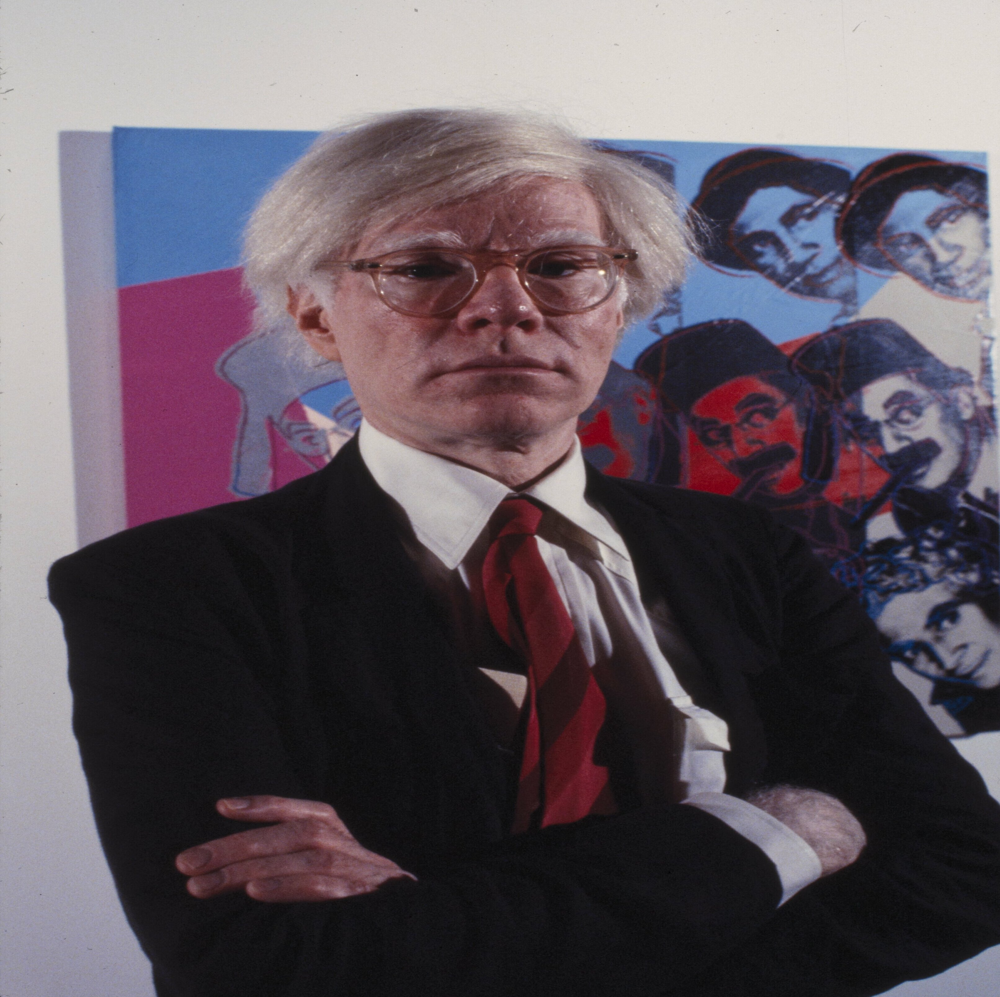
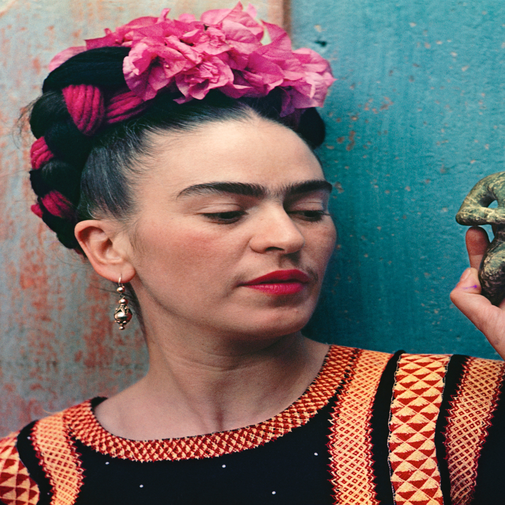
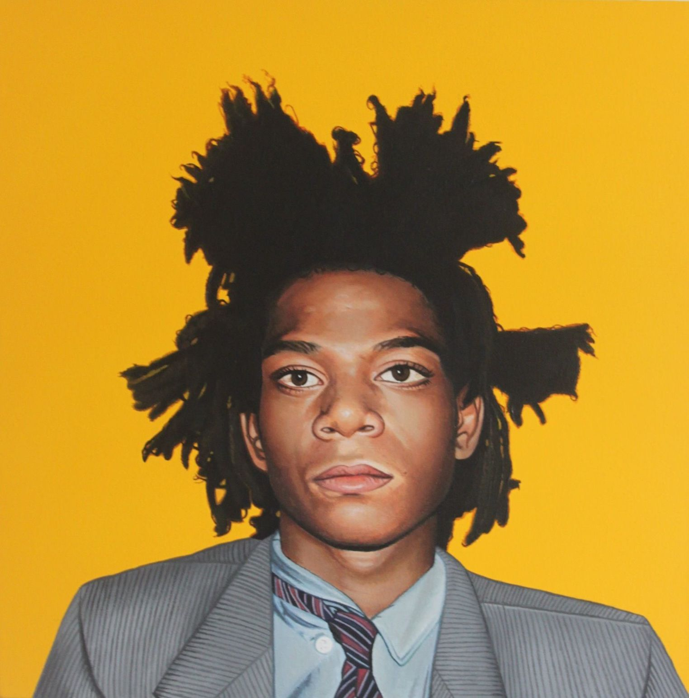

Our team have taken inspiration from the famous American visual artist known as Andy Warhol. His art influenced a growth in the pop art movement in the 1960s up until the present day. Our personal inspiration has sprung largely due to Warhol's continued use of bright colours and modernised style, which we have incorporated into our own art, as-well as aspects of Wiktoria's upcoming exhibition.

Our team have taken inspiration from Freda Kahlo, a Mexican painter, largely known due to her numerous self-portraits and other artworks. We have taken inspiration from her Mexican culture alongside her continued use of bright colours and expressive art. We admire her courage and determination and hope to mirror this attitude in all of our work. Our team have also made flower crowns (an accessory which was frequently worn by Frida).

Our team have taken inspiration from Jean-Michel Basquiat, an American artist, popular in the 1980's and part of the Neo-expressionism movement. We have been inspired by his abstract expressionist paintings and unique identity
